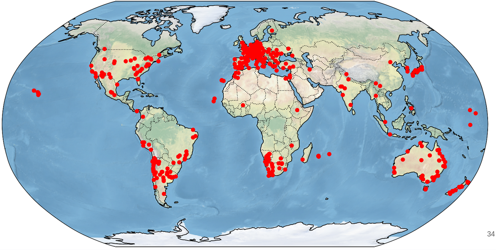

Rede de Observadores
O Grupo de Pesquisas em Ocultações Estelares e Caracterização Física de Objetos do Sistema Solar integra uma colaboração internacional que promove campanhas de observação de ocultações estelares em todo o planeta. O grupo foi responsável por diversas descobertas envolvendo pequenos corpos do Sistema Solar, além do monitoramento e da caracterização de estruturas secundárias nesses objetos. Nossa lista de alvos é extensa, destacando-se as seguintes frentes de atuação:
Sistemas de Anéis
Atuamos na descoberta, no monitoramento e na caracterização física de sistemas de anéis em objetos como Chariklo, Quaoar, Haumea e Chiron. Nosso grupo foi pioneiro na detecção desse tipo de estrutura em pequenos corpos do Sistema Solar.
Atmosferas Planetárias
Acompanhamento sazonal da atmosfera de objetos como Plutão e Tritão, além da busca por atmosferas tênues em outros Objetos Transnetunianos.
Caracterização de Objetos
Os dados coletados por nossa rede de colaboradores possuem um nível de precisão que permite a detecção de estruturas secundárias em pequenos corpos, como a cratera no TNO Mani, além de possibilitar a caracterização global de objetos como o TNO Quaoar.
O grupo conta com uma rede de XX observadores distribuídos por todo o planeta. Cada ponto no mapa abaixo representa uma observação realizada por um de nossos colaboradores:

Além disso, o grupo mantém propostas regulares de tempo de observação em telescópios com participação brasileira gerenciados pelo LNA, como o OPD, o SOAR e o Gemini. Nossas atividades são recorrentes, com submissões em todos os semestres para a execução de observações de ocultações estelares, fotometria rotacional, fenômenos mútuos, polarimetria e espectroscopia, entre outras frentes. O cronograma dessas atividades é mantido em um calendário de observação do grupo: